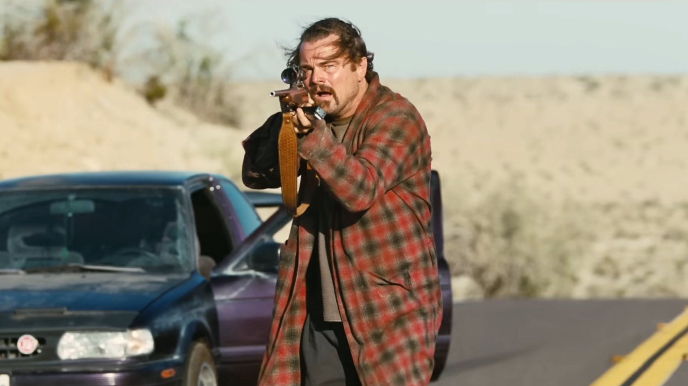
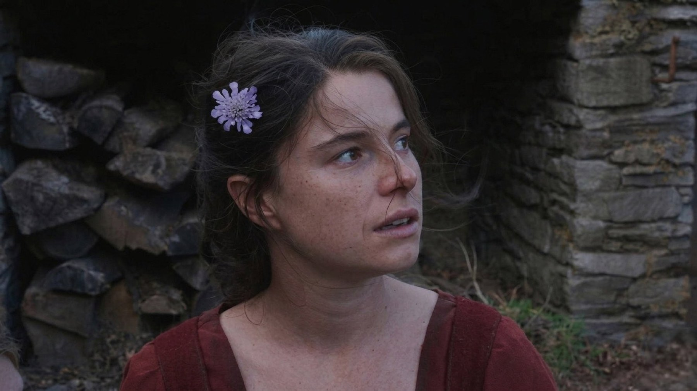
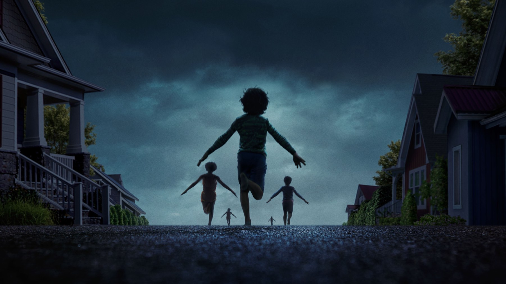

I migliori film del 2025 secondo la critica (e dove vederli)
Abbiamo messo insieme le classifiche di fine anno di centinaia di critici: ecco i dieci film più amati del 2025, da Paul Thomas Anderson a Jafar Panahi, con la piattaforma dove trovarli
Ogni fine anno i critici di tutto il mondo pubblicano le loro classifiche, e mettendole insieme si ottiene una fotografia abbastanza fedele dei film che hanno lasciato il segno. Per costruire questa lista abbiamo usato il conteggio di CriticsTop10, che raccoglie centinaia di top ten di testate e critici: più classifiche contengono un film, più in alto finisce. Il risultato racconta un 2025 ricchissimo, in cui il cinema d'autore americano e quello internazionale si sono divisi i primi posti.
Per ogni titolo indichiamo dove si può vedere in Italia. Le piattaforme sono aggiornate a ottobre 2026 e i cataloghi cambiano spesso, quindi vale la pena controllare prima della visione.
1. One Battle After Another
Il film più amato dell'anno, senza discussioni: presente in 735 classifiche e primo in 212, con una media di 95 su 100 su Metacritic. Paul Thomas Anderson trasforma Vineland di Thomas Pynchon in un'avventura politica, buffa e furiosa, con Leonardo DiCaprio ex rivoluzionario in fuga, Sean Penn e Benicio del Toro. A marzo 2026 ha vinto sei Oscar, tra cui miglior film. Dove vederlo: in abbonamento su HBO Max.

2. Sinners
Secondo in 598 classifiche, Sinners è il film che ha unito critica e pubblico: Ryan Coogler mescola horror, musical e racconto storico nel Mississippi del 1932, con Michael B. Jordan nel doppio ruolo di due gemelli. Su Metacritic ha 84 su 100 e agli Oscar 2026 ha stabilito il record di 16 candidature. Dove vederlo: in abbonamento su Sky e NOW.
3. Marty Supreme
Josh Safdie dirige Timothée Chalamet nei panni di un ambizioso giocatore di ping pong, in un film frenetico e pieno di energia che ha conquistato 373 classifiche e una media di 91 su Metacritic. Dove vederlo: in abbonamento su HBO Max.
4. It Was Just an Accident
Uscito in Italia come Un semplice incidente, il film di Jafar Panahi ha vinto la Palma d'oro al Festival di Cannes 2025. Il regista iraniano, che per anni ha lavorato nonostante i divieti del suo paese, firma un thriller morale teso e sorprendente, presente in 360 classifiche e con 91 su Metacritic. Dove vederlo: in abbonamento su Sky e NOW.
5. Sentimental Value
Joachim Trier torna a lavorare con Renate Reinsve, protagonista del suo La persona peggiore del mondo, in un dramma familiare su un padre regista, interpretato da Stellan Skarsgård, e le sue figlie. Gran premio della giuria a Cannes 2025 e, a marzo 2026, Oscar per il miglior film internazionale per la Norvegia. Dove vederlo: in abbonamento su Sky e NOW.

6. The Secret Agent
Il brasiliano Kleber Mendonça Filho, in Italia con il titolo L'agente segreto, ha vinto a Cannes il premio per la regia, mentre Wagner Moura è stato premiato come miglior attore. Un thriller politico ambientato negli anni della dittatura brasiliana, con 92 su Metacritic. Dove vederlo: in abbonamento su MUBI.
7. Weapons
L'horror dell'anno. Zach Cregger costruisce un mistero a incastro intorno a diciassette bambini scomparsi nella stessa notte, raccontato da più punti di vista. Presente in 255 classifiche, ha portato ad Amy Madigan l'Oscar come attrice non protagonista. Dove vederlo: in abbonamento su HBO Max.

8. Train Dreams
Diretto da Clint Bentley e tratto dal racconto di Denis Johnson, è il ritratto di un uomo comune nell'America del primo Novecento, con Joel Edgerton protagonista. Un film contemplativo e struggente, primo in 25 classifiche e con 88 su Metacritic. Dove vederlo: in abbonamento su Netflix.
9. Hamnet
Chloé Zhao adatta il romanzo di Maggie O'Farrell sulla famiglia di William Shakespeare e sulla perdita del figlio Hamnet. Jessie Buckley, nei panni della moglie Agnes, ha vinto l'Oscar come miglior attrice; accanto a lei Paul Mescal. In Italia è uscito come Hamnet - Nel nome del figlio. Dove vederlo: in abbonamento su Sky e NOW, oppure a noleggio.
10. Sorry, Baby
Chiude la top ten l'esordio di Eva Victor, che scrive, dirige e interpreta una commedia drammatica sull'elaborazione di un trauma, delicata e sorprendentemente divertente. Una delle rivelazioni dell'anno, con 90 su Metacritic. Dove vederlo: in abbonamento tramite il canale iWonder Full su Prime Video, oppure a noleggio.
Cosa ci dice questa classifica
Il 2025 è stato l'anno degli autori: quasi tutti i film in lista sono opere personali, spesso rischiose, e molti arrivano da fuori Hollywood, dall'Iran al Brasile alla Norvegia. Ma è stato anche l'anno in cui film d'autore come One Battle After Another, Sinners e Weapons hanno fatto grandi incassi, segno che il pubblico in sala non cerca solo franchise. Una buona notizia per chi ama il cinema.
Domande frequenti
Qual è il miglior film del 2025 secondo la critica?
One Battle After Another di Paul Thomas Anderson: è il film presente nel maggior numero di classifiche di fine anno dei critici e ha la media più alta su Metacritic (95/100). A marzo 2026 ha vinto anche l'Oscar come miglior film.
Dove vedere One Battle After Another e Sinners in streaming?
One Battle After Another è in abbonamento su HBO Max; Sinners su Sky e NOW.
Quale film ha vinto la Palma d'oro a Cannes 2025?
It Was Just an Accident di Jafar Panahi, uscito in Italia come Un semplice incidente.